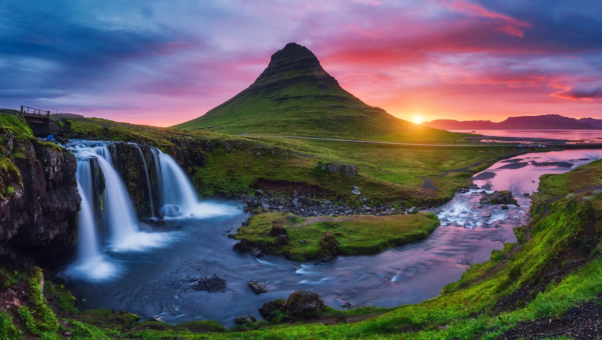
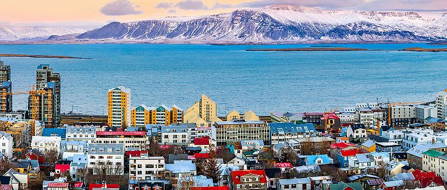

Es un país soberano localizado en el extremo noroeste de Europa, cuyo territorio abarca la isla homónima y algunas pequeñas islas e islotes adyacentes en el océano Atlántico, entre el resto de Europa y Groenlandia. A causa de su localización en la dorsal mesoatlántica, es un país con gran actividad volcánica y geológica, factor que afecta en gran medida al paisaje del territorio islandés. El interior del país consiste en una meseta caracterizada por desiertos, montañas, glaciares y ríos glaciares que fluyen hacia el mar a través de las tierras bajas. sitios a conocer: La Laguna Azul, Lago glacial, observar auroras boreales,visitar la cascada Seljalandsfoss.
Mi Viaje a Islandia
Principales sitios turisticos:
- Aguas termales en Myvatn
- Bucear en la placa continental
- Lago Glaciar
- cascadas en Seljalandsfoss
- iglesia de Hallgrimskirche en Reikiavik
- Skogafoss
Itinerario
- Dia 1: A las 7:00 am llegaremos al aeropuerto de islandia, nos alojaremos en Raudaberg, Este disfrutaremos de las cascadas Urridafoss, gljúfurárfoss, Avion estrellado.
- Dia 2: Salimos para Jokursalon desde Keflavik a Höfn haciendo paradas en Seljalandsfoss y Skogafoss. Desde Höfn, pasamos la primera noche de Auroras Boreales.
- Día 3: Salimos durante 50 minutos hacia Jokulsarlon. Vemos la laguna de Jokulsarlon, hacemos el tour en barca y por la noche vemos las auroras.
- Dia 4: Este dia iremos desde las 8:00 am a Laguna Azul y a las 12:00 pm iremos a recorrer Grindavík y comer en un restaurante de la ciudad.
- Dia 5:Regresamos a Vik durante 2h, visitamos sus acantilados de basalto, los miradores de Dyrhólaey y disfrutamos de las auroras desde esta zona.
- Dia 6:Hacemos trekkings por la zona hasta la cascada de Skaftefell o el mirador Sjónarnípa hacia el glaciar.
- Día 7: Tendremos todo el dia para pasar haciendo recorrido en la zona, viendo iceberg y comiendo en restaurantes cercanos.
- Dia 8: Tomamos vuelo de vuelta a las 10:00 am.

Urridafoss

Reikiavik


Historia
La historia de Islandia es corta en comparación con la mayoría de los países europeos, ya que la presencia humana en la isla comienza a finales del siglo IX. También desde un punto de vista geológico, Islandia es una isla joven, pues se formó hace aproximadamente 20 millones de años tras una serie de erupciones volcánicas submarinas en la dorsal mesoatlántica. Las muestras de roca más antiguas datan de hace ca. 16 millones de años.
Los primeros colonos fueron los vikingos en el siglo IX, cuando centenares de personas emigraron debido a la falta de tierra cultivable en los países escandinavos y a las guerras civiles provocadas por la ambición de Harald I de Noruega. Antes de ellos solo habían estado de visita monjes irlandeses, que dejaron báculos y otros objetos eclesiásticos registrados en las sagas islandesas.
En 1904, 1923 y 1933 fueron descubiertas en Islandia 3 monedas romanas del siglo III, acuñadas durante el gobierno de los emperadores Aureliano, Probo y Diocleciano. La teoría más aceptada es que fueron llevadas ahí en una época bastante posterior.